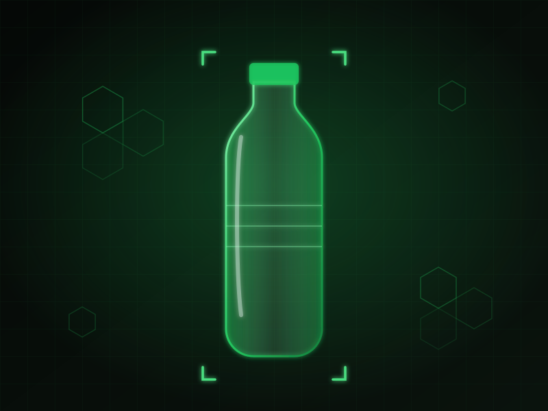
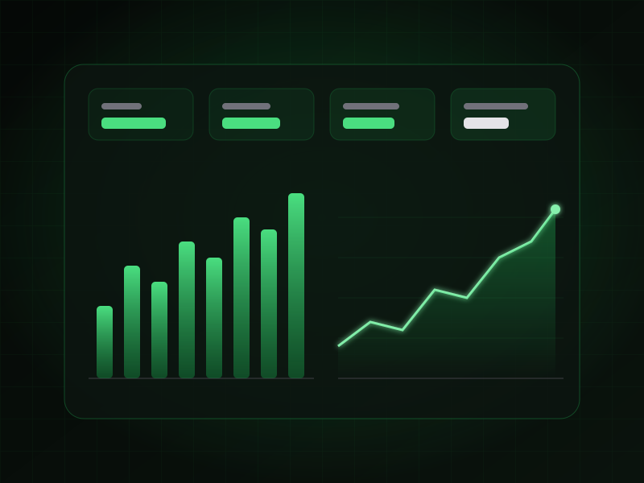

Visión en tiempo real
Cámaras industriales sobre la cinta capturan cada objeto. Un modelo de visión artificial lo identifica en milisegundos, incluso sucio, aplastado o parcialmente tapado.
Cámaras RGBDeep learningEdge AI
♻️ Visión artificial para plantas de reciclaje
EcoVision AI automatiza la clasificación de PET, acero, papel y cartón con visión artificial. Menos error humano en la cinta, fardos más limpios y una planta más rentable.

4
materiales en la primera versión
24/7
operación continua sobre la cinta
<80ms
por decisión de clasificación
95%
pureza objetivo por fardo
Metas de diseño del programa piloto.
La solución
Pasa el cursor sobre cada tarjeta, o tócala en el celular, para ver el detalle.

Cámaras industriales sobre la cinta capturan cada objeto. Un modelo de visión artificial lo identifica en milisegundos, incluso sucio, aplastado o parcialmente tapado.

Detecta botellas y envases de PET y los separa del resto del flujo. Fardos más limpios se venden mejor y se rechazan menos.

Identifica latas y envases de acero y complementa al separador magnético con verificación visual de lo que realmente sale de la línea.

Distingue papel de cartón corrugado para que cada fracción llegue a su fardo sin contaminación cruzada con plásticos o metales.

La decisión del modelo activa válvulas de aire o actuadores que desvían cada objeto a su bahía, sin detener la cinta.

Un panel muestra toneladas por material, pureza, rechazos y rendimiento por turno, con datos trazables para reportar metas de la Ley REP.
Cómo funciona
Una estación de cámaras con iluminación controlada se monta sobre tu cinta actual. No hay que rehacer la línea.
Un computador industrial en la planta ejecuta el modelo y decide el material de cada objeto, sin depender de internet.
La señal llega al PLC, que activa la válvula de aire en el momento exacto para enviar el objeto a su bahía.
Cada decisión queda registrada. Ves pureza, volumen y rechazos por turno, y el modelo mejora con tus propios datos.
Demo en vivo
Cambia entre clasificación manual y EcoVision AI y compara la pureza de los fardos.
Simulación ilustrativa. Los valores no corresponden a una planta real.
Integraciones y API
EcoVision AI habla los protocolos industriales de tu línea y entrega cada evento por API para que lo uses en tus propios sistemas.
POST /v1/lineas/L1/eventos
{
"timestamp": "2026-10-13T14:32:08.412-03:00",
"objeto_id": "L1-000184237",
"material": "PET",
"confianza": 0.97,
"bbox": [412, 188, 96, 164],
"accion": {
"tipo": "expulsion",
"valvula": 3,
"retardo_ms": 142
},
"latencia_ms": 38
}Planes
90 días
Para validar el resultado en tu propia línea.
Por línea / mes
Para operación continua, con soporte en Chile.
A medida
Para gestores con varias plantas.
Roadmap
Clasificación de PET, acero, papel y cartón en una línea real.
Aluminio, PEAD y vidrio, con el mismo hardware instalado.
Brazo robótico para objetos que el aire no puede desviar.
Reportes automáticos para gestores y sistemas de gestión REP.
Testimonios
Textos de ejemplo. Reemplázalos por testimonios reales de tus pilotos.
“Bajamos el rechazo de fardos de PET. EcoVision AI cambió por completo cómo trabajamos la línea de envases.”
“Por primera vez tenemos datos por turno. EcoVision AI transformó cómo reportamos nuestras metas de reciclaje.”
“La instalación no paró la cinta. EcoVision AI se integró con nuestro PLC sin rehacer la línea.”
Concepción, Región del Biobío, Chile
Nosotros
EcoVision AI nace en Concepción, en la Universidad del Desarrollo, a partir de una pregunta simple: ¿por qué la clasificación de residuos sigue dependiendo casi por completo del ojo humano, frente a una cinta que no se detiene?
Combinamos visión artificial, automatización industrial y conocimiento de la operación diaria de las plantas. Partimos con PET, acero, papel y cartón, los materiales que más pesan en el día a día de una línea de clasificación.
Queremos que las plantas de Chile y Latinoamérica reciclen más, con menos error y mejores márgenes.
Programa piloto
Evaluamos tu línea, instalamos una estación de visión y medimos el resultado con tus propios datos durante 90 días.
Postulaciones abiertas para plantas de la Región del Biobío.